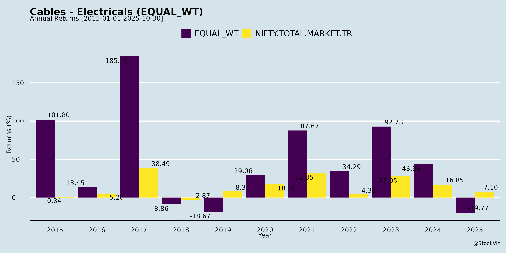
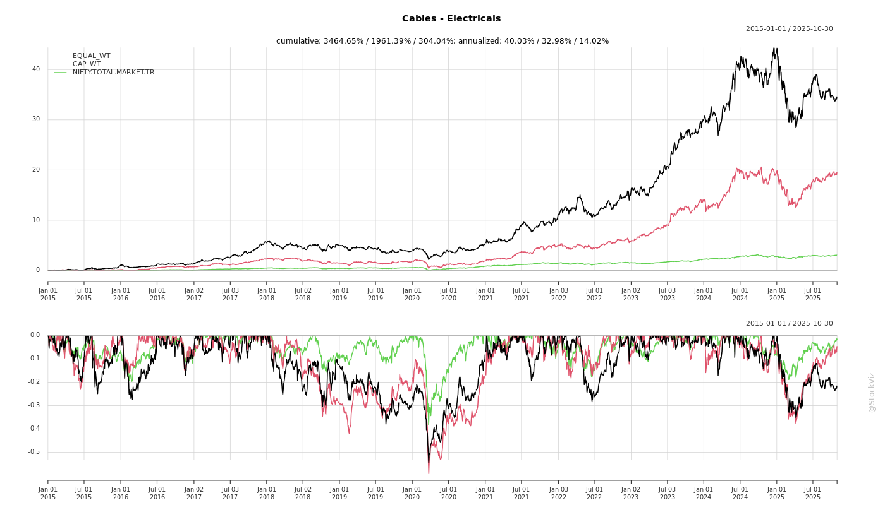
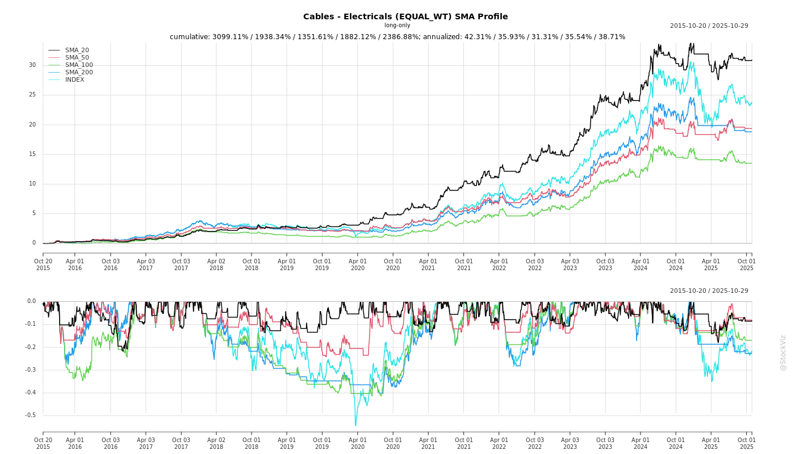
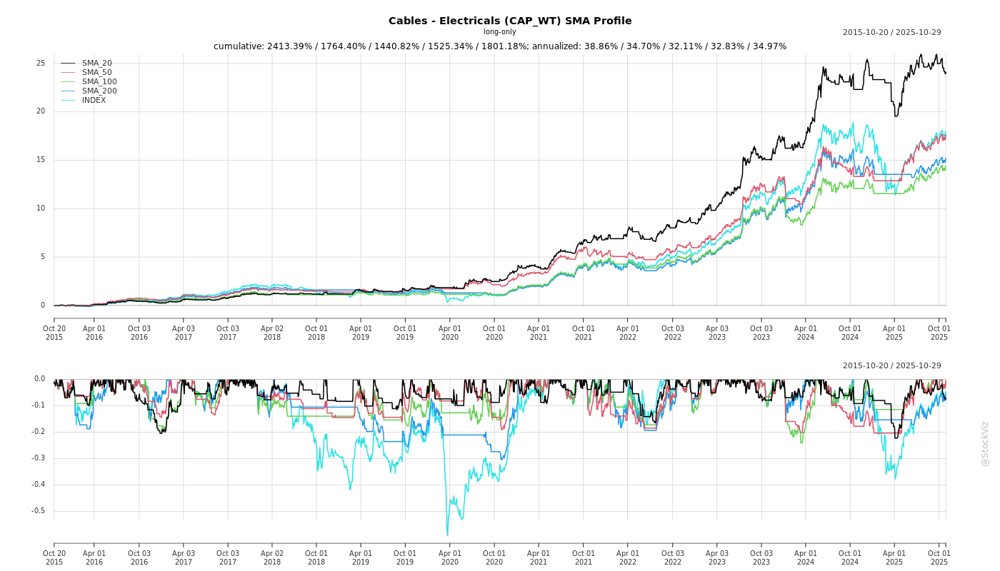
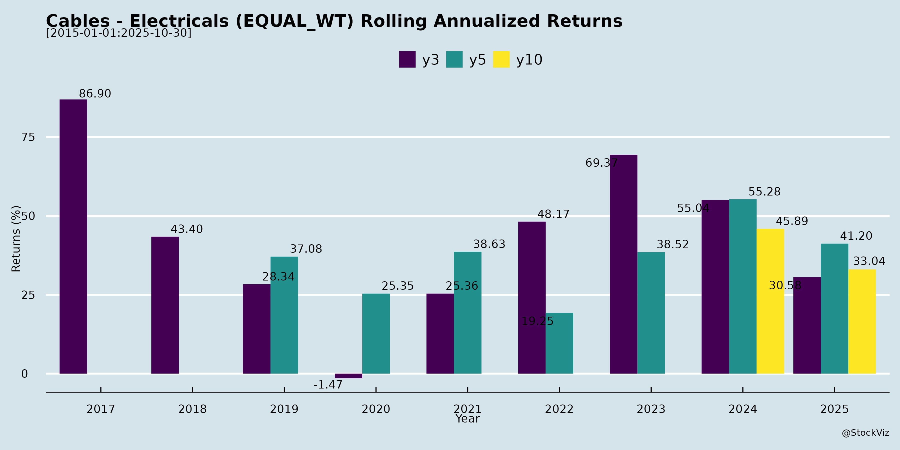
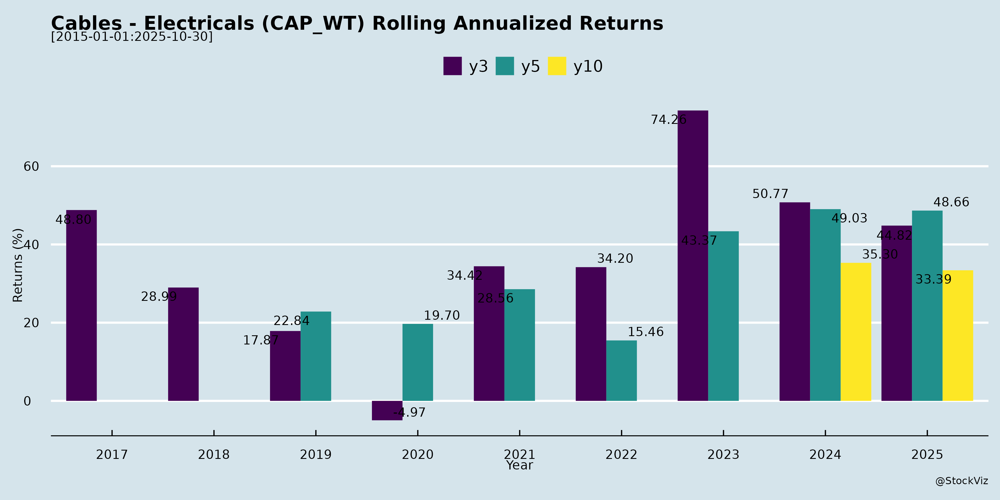

Cables - Electricals
Industry Metrics
February 20, 2026
Annual Returns


Cumulative Returns and Drawdowns

SMA Scenarios


Current Distance from SMA
Rolling Returns


Market Cap
EBIT (% of Industry Total)
Revenue (% of Industry Total)
AI Summaries
Analyst
asof: 2025-11-29
Indian Cables & Electricals Sector Analysis
Overview
The Indian cables and electricals sector (focusing on wires, power cables, specialty cables, FMEG, and related products) is experiencing robust demand driven by infrastructure development, urbanization, renewable energy, and electrification initiatives. Insights from recent filings and earnings transcripts (Q2/H1 FY26 for RR Kabel, Finolex; FY25 for Paramount; others like Polycab, KEI, Dynamic, Quadrant) highlight strong volume growth (e.g., 16-57% YoY across players), revenue CAGR targets of 18-30% from leaders, and capacity expansions. However, commodity volatility and competition temper optimism. Industry growth is pegged at 13-14% (2x GDP), with organized players gaining share.
Tailwinds
- Infrastructure & Govt Spending: Robust demand from housing, real estate, infra projects (e.g., smart cities, power distribution reforms, PLI schemes), renewables (solar cables), data centers, EVs, and railways (Kavach signaling). RR Kabel: Institutional/retail traction; Finolex: Industrial cables/solar up 60% volumes; Paramount: Power cables 77-106% growth.
- Shift to Organized/Branded Players: Rising consumer awareness on safety/efficiency; leaders like RR Kabel, Polycab leveraging distribution (deep networks in North/West), premium products (energy-efficient, compliant cables).
- Export Momentum: US/Europe/Middle East key; RR Kabel: 20-35% growth (75-80% from Europe/ME); Paramount: 75% YoY growth (31% of sales); targeting 40% share. Certifications (BIS for solar) aid entry.
- Operational Leverage & Margins: EBITDA margins expanding (RR Kabel: 8.1% Q2, targeting 10.5-11% by FY28; Paramount: Debt-free, WC days down to 101). Volume-led growth (RR Kabel: 18% CAGR via Project Rise; Paramount: 57% metal consumption growth).
- Capex & Capacity: Expansions in HV cables (up to 220kV), new plants (Paramount: 31 acres MP, Rs.150cr Phase-1 for Rs.1,000cr revenue in 3 yrs); Finolex/Quadrant: Preform/fiber plants.
Headwinds
- Commodity Volatility: Copper/aluminum price surges/inflation (RR Kabel: Potential export margin pressure; Finolex: Pricing actions needed). Lower realizations despite volumes (Paramount: 57% volume vs. 47% revenue growth).
- Segment-Specific Weakness: FMEG (fans/appliances) soft (RR Kabel: Marginal decline, breakeven Q4 FY26; Finolex: Headwinds). Agriculture muted (Finolex: Prolonged monsoon).
- Demand Moderation: Real estate slowdown (Finolex: Flat building wire); uneven rural recovery.
- Competition Intensifying: New entrants (UltraTech starting Q3 FY26; 2 major houses entering). Pricing discipline key amid capacity additions.
- US Trade Issues: Tariffs (10% imposed Apr’25; reciprocal duties post-Jul’25); Paramount: 14-15% duty vs. competitors’ 0-5%; RR Kabel: US share down ~2%.
Growth Prospects
- High Double-Digit Industry Growth: 13-14% CAGR; leaders outpacing (RR Kabel: H2 > H1, 18% volumes; Paramount: 30%+ CAGR to Rs.5,000cr by FY30; Quadrant: Kavach orders Rs.984cr).
- Product/Segment Expansion: HV cables (66-220kV), solar/EV/specialty (fire-retardant, E-beam cured); exports (diversifying geographies); FMEG recovery (Finolex: Rs.500cr by FY28).
- Railways & Safety: Kavach rollout (Quadrant: Rs.829cr loco + Rs.155cr trackside; multi-fold growth post-RDSO approval).
- Domestic Focus: Infra/urbanization; institutional uptick (RR Kabel: Cables 80% capex; Paramount: Power cables 50% sales).
- Sequential Improvement: H2 FY26 better (RR Kabel: Volumes/margins sustained; festive recovery in FMEG).
| Company | FY26/H1 Guidance | Long-Term Targets |
|---|---|---|
| RR Kabel | 16% H1 revenue; H2 > H1; 18% volumes | EBIT 10.5-11% wires/cables by FY28 |
| Finolex | Modest (agri/realty soft) | Electrical cables Rs.6,500cr peak; FMEG Rs.500cr FY28 |
| Paramount | 30% CAGR revenues | Rs.5,000cr by FY30; US 40% |
| Quadrant | Cables revival (solar/EV/exports) | Kavach execution post-approval (Dec’25 deadline) |
Key Risks
- Input Cost Fluctuations: Copper/al price volatility erodes margins (RR Kabel/Finolex: Volatility “part of business”).
- Regulatory/Approval Delays: Kavach ISA/RDSO (Quadrant: Field trials ongoing; execution risk if delayed beyond Dec’25).
- Trade/Geopolitical: US tariffs/reciprocal duties (Paramount/RR Kabel: US exposure 30-95%; diversification needed).
- Competition & Pricing Pressure: Capacity additions; L1 tender-driven (Finolex: Cables tender risks; BharatNet muted).
- Execution/Working Capital: Order spills, inventory buildup (RR Kabel: WC stable at 57 days; Finolex: 33 days H1).
- Macro/Demand: Monsoon/inflation/rural slowdown; govt capex delays.
- Segment Loss-Making: FMEG losses (RR Kabel: Stable but Q4 breakeven).
Summary
Bullish Sector Outlook: Tailwinds from infra/renewables/urbanization outweigh headwinds, with 13-14% industry growth and leaders targeting 18-30% CAGR via capex/exports/specialty products. Q2 FY26 shows resilience (RR Kabel +19.5% revenue; Paramount FY25 +47%). Key Theme: Volume-led expansion with margin discipline (8-11% EBITDA targets). Risk-Adjusted View: High growth potential (Rs.5,000cr+ for majors by FY30), but monitor copper prices (volatility), US tariffs (export drag), and competition (new capacities). Leaders like RR Kabel/Paramount positioned for outperformance; smaller players (Quadrant/Finolex) execution-dependent. Overall: Positive with tactical risks.
Financial
asof: 2025-12-02
Analysis of Indian Cables & Electricals Sector (Q3 & 9M FY25 Results)
The Indian Cables & Electricals sector, dominated by players like Polycab, KEI, RR Kabel, Finolex, Dynamic Cables, Cords, and smaller peers (Quadrant, Godha, Plaza Wires), demonstrated resilient revenue growth amid volatile commodity prices and regulatory scrutiny. Aggregate revenue across sampled companies surged ~20-50% YoY in Q3 FY25 (e.g., Polycab ₹52k Cr, KEI ₹25k Cr, Dynamic ₹25k Cr), driven by wires/cables (80-90% of revenue). PAT growth varied (10-30% YoY for leaders), with EBITDA margins stable at 8-12% despite copper volatility. However, challenges like tax raids (Polycab, RR Kabel), rising debt costs, and audit issues in smaller firms temper optimism. Below is a structured analysis of headwinds, tailwinds, growth prospects, and key risks.
Tailwinds (Positive Drivers)
- Robust Demand from Infra & Real Estate: Wires & Cables segment (core for 80-95% revenue) grew 10-40% YoY (Polycab Wires: ₹44k Cr Q3; KEI Cables: ₹24k Cr). Govt. capex (power T&D, railways, housing) boosted EPC/HT cables (Polycab “Other”: ₹5k Cr Q3, up 2x YoY).
- Volume-Led Growth: Finolex noted 7% Optic Fiber growth; Dynamic 30%+ topline; Cords 20% 9M revenue rise. Declining copper prices aided margins (Polycab EBITDA margin ~12%).
- Diversification Success: FMEG (fans/switches) gaining traction (Polycab FMEG loss narrowing; RR Kabel FMEG steady). Exports via subs (Polycab USA/Australia; KEI SA) added buffers.
- Capacity Ramp-Up: Finolex E-Beam operational; Dynamic/KEI expansions funded by QIPs (KEI ₹2k Cr raise).
- Stable/Improving Margins: Leaders like Polycab (PAT ₹4.6k Cr Q3, up 11% YoY) and KEI (EPS ₹18) showed resilience via cost controls.
Headwinds (Challenges)
- Commodity Volatility: Copper prices dipped but high-cost inventory hit Q3 (Polycab changes in inv: -₹3.5k Cr; Finolex -₹152 Cr). Material costs 70-80% of revenue squeezed smaller players (Quadrant Q3 loss ₹85L).
- Elevated Debt & Finance Costs: Borrowings up (Cords ₹92 Cr debt; Dynamic ₹375L Q3 interest). Rates steady, but leverage risks amid slowing growth (Finolex PAT flat YoY).
- Regulatory/Tax Scrutiny: IT searches (Polycab/RR Kabel Dec’23; no material impact claimed, but uncertainty lingers). Godha audit disclaimer flags sales/inventory unreliability.
- Seasonal/Inventory Pressure: Negative inventory changes aided topline but signal destocking (Polycab -₹7.5k Cr 9M; Finolex +ve EBITDA but PAT dip).
- Margin Erosion in Peripherals: FMEG losses persist (Polycab ₹128 Cr Q3 loss); EPC volatile (KEI EPC down).
Growth Prospects
- Infra Multiplier (High): ₹11L Cr budget allocation to power/railways; PLI scheme for cables. Wires demand from housing (₹10L Cr PMAY); HT cables for renewables/EV.
- Export & Capacity Expansion (Medium-High): Polycab/KEI subs (USA/Australia/SA) scaling; Finolex Preform commissioning Q1 FY26. Dynamic QIP-funded growth.
- FMEG & Value-Add (Medium): Polycab/KEI pushing fans/lighting (12% of Polycab revenue); RR Kabel JV in Bangladesh.
- 9M FY25 Trends: Aggregate revenue +25-40% YoY; PAT +15-30%. FY26 EPS growth 15-20% feasible if copper stabilizes ~₹800/kg.
- M&A/Consolidation: Smaller players (Godha/Quadrant) vulnerable; leaders acquiring capacities.
Projected Sector Growth: 12-15% CAGR FY25-27 (infra-led); leaders (Polycab/KEI) 20%+ via exports/FMEG.
Key Risks
| Risk Category | Description | Impact (High/Med/Low) | Mitigants |
|---|---|---|---|
| Commodity Price Volatility | Copper ~70% costs; 10% price swing erodes 2-3% margins. | High | Hedging (Polycab/KEI); pass-through pricing. |
| Regulatory/Litigation | IT raids (Polycab/RR Kabel); Godha audit flags (sales/inv unreliability). | High | No material impact disclosed; disclosures ongoing. |
| Debt & Liquidity | Finance costs 5-10% of EBITDA (Cords ₹52 Cr Q3 interest). | Medium | QIPs (KEI/Dynamic); cash-rich leaders (Polycab ₹26k Cr assets). |
| Competition/Overcapacity | 100+ players; China dumping risks. | Medium | Leaders’ scale (Polycab 20% mkt share); branded focus. |
| Execution (Small Caps) | Quadrant/Godha losses; data quality issues. | High (for small caps) | Sector avg masks weak peers. |
| Macro Slowdown | Infra delays; rural destocking. | Medium | Urban/infra buffers. |
Overall Risk Profile: Moderate; leaders resilient, small caps high-risk.
Summary
- Bullish Outlook: Sector riding infra tailwinds; leaders like Polycab/KEI (ROE 25-30%) set for 15-20% growth. 9M FY25 signals FY25 revenue +25% (₹2.5L Cr sector est.).
- Cautious Notes: Copper/tax risks cap upside; focus on debt reduction. Buy leaders (Polycab/KEI/Finolex); Avoid small caps (Godha/Quadrant).
- Valuation: Leaders trade at 40-60x FY26 EPS (rich but justified); sector P/E 35x vs. 5Y avg 25x.
Data aggregated from filings; individual results audited/reviewed (some disclaimers).
General
asof: 2025-12-03
Indian Cables & Electricals Sector Analysis
Based on recent filings (Oct-Dec 2025) from key players (Polycab, KEI, RR Kabel, Finolex, Universal Cables, Dynamic Cables, Quadrant Future Tek, Paramount, Cords Cable, Plaza Wires, Auri Grow).
Tailwinds (Positive Drivers)
- Capacity Expansion & Production Ramp-up: KEI started trial production at greenfield Sanand (Gujarat) unit for LT/HT/EHV cables (commercial by Dec 10, 2025). Quadrant emphasizes backward-integrated manufacturing (1,900 MT/annum capacity) for specialty cables.
- Strong Demand in Infra/Renewables/Railways: Renewables push (500GW non-fossil by 2030), EV/solar cables (BIS approvals at Quadrant/Paramount), railway modernization (Kavach TCAS systems; Quadrant received interim RDSO safety approval). Paramount notes rising domestic demand in power T&D, railways, telecom.
- Robust Order Books & Revenue Momentum: Quadrant H1FY26 order book ₹11,564 Mn (up YoY); Paramount ₹537 Cr (86% domestic). Revenue growth: Paramount Q2FY26 +20% YoY (₹428 Cr); Quadrant Q2 +20% QoQ.
- Investor/Analyst Interest: Polycab scheduling one-on-one meets (Nuvama, New Vernon). Policy updates (Dynamic Cables’ fair disclosure code).
- Diversification & Exports: Shift to high-margin specialty (rail/defense/solar/EV); Paramount 59% export mix (US focus, though challenged).
Headwinds (Challenges)
- Export Tariff Pressures: Paramount highlights US tariffs hiked to 25% (Apr-Aug 2025), impacting >40% US export revenue (DDP terms); led to margin compression (EBITDA margin 5.8% vs 9.4% YoY).
- Margin Erosion from Investments: Quadrant Q2FY26 EBITDA loss ₹104 Mn (-28% margin) due to R&D/capex in Kavach/EI; H1FY26 PAT loss ₹294 Mn.
- Regulatory/Tax Hurdles: Finolex GST demand ₹1.87 lakh (minor, appealable); compliance lapses (Plaza Wires cautionary letter for delayed Reg 23 filing).
- Input Cost Volatility: Implicit in backward integration focus (copper/polymers); higher material costs noted at Paramount (+32% YoY).
Growth Prospects
- Market Size & TAMP: Railways specialty cables to $175 Mn by CY30; defense $195 Mn; solar/EV $65 Mn each. Kavach deployment: ₹1,700 Cr FY26 allocation (69,000 km target).
- High-Growth Segments: 40-50% revenue from power/railways (Paramount/Quadrant). EV/solar cables, submarine/defense (Quadrant MoU with RailTel). Domestic capex in power T&D/renewables to drive 20-30% YoY growth.
- Execution Catalysts: RDSO final approvals (Quadrant Kavach); new facilities (KEI); IPO proceeds utilization (Quadrant: capex/EI development).
- Projections: Sector buoyed by ₹1.2 lakh Cr railway safety budget; Paramount eyes domestic offset for exports; overall 25-30% revenue CAGR potential via infra push.
Key Risks
- Geopolitical/Trade (High): US tariffs could dent 30-40% export revenues (Paramount/Quadrant); competition from low-tariff countries.
- Execution/Regulatory (Medium-High): Delays in RDSO approvals, new plant ramp-up; tax litigations (Finolex); SEBI compliance (cautionary letters).
- Commodity/Financial (Medium): Copper price swings; working capital intensity (inventories up at Quadrant/Paramount).
- Competition/Concentration (Medium): Reliance on PSUs/railways (Quadrant 62% private clients); margin pressure from capex (negative EBITDA in growth phase).
- Macro: Slow infra spend or monsoon disruptions.
Overall Outlook: Positive (Tailwinds > Headwinds). Infra/rail/renewables drive growth (20-30% sector revenue potential), but exports/tariffs pose near-term margin risks (5-9% EBITDA). Strong order books signal visibility; monitor US trade dynamics & RDSO nods. Companies like KEI/Quadrant positioned for outperformance via specialty focus.
Investor
asof: 2025-11-29
Indian Cables & Electricals Sector Analysis
The Indian Cables & Electricals sector (encompassing wires, power cables, specialty cables, railway signaling, and FMEG like fans/switches) is witnessing robust structural growth driven by infrastructure capex, electrification, and formalization. Analysis is based on recent Q1/Q2 FY26 earnings transcripts/announcements from key players (Polycab, KEI, RR Kabel, Finolex, Dynamic Cables, Quadrant Future Tek, Paramount). Peers report 5-20%+ YoY revenue growth in H1 FY26, with wires/cables as core driver (e.g., RR Kabel +19.5% Q2 revenue, Paramount +47% FY25). Industry volumes up ~16% (RR Kabel), aided by falling/rising metal prices enabling mix shifts.
Tailwinds (Positive Drivers)
- Strong Demand Momentum: Infra (power distribution reforms, PLI, smart cities), housing/construction, renewables (solar cables), data centers, railways (Kavach signaling), and industrialization. Institutional/B2B demand robust (RR Kabel: 16% volume growth; Finolex: industrial cables +60% volumes).
- Market Formalization: Shift to branded/organized players (10-12% industry CAGR expected; RR Kabel targets 18% volume CAGR via Project Rise).
- Export Tailwinds: US/Europe/Middle East growth (Paramount: US 95% of exports, +75% YoY; RR Kabel: +20-36% YoY exports). Certifications (BIS solar for Quadrant) enable entry.
- Operational Leverage: Margin expansion via capacity utilization (RR Kabel: EBITDA margin +360bps to 8.1%; Finolex: strong EBITDA +26% Q2), cost efficiencies, premium products (fire-retardant, E-beam cables).
- Government Push: Railway modernization (Quadrant: Rs984cr Kavach order book), electrification, housing schemes.
- Debt Reduction & Capex: Debt-free status (Paramount), expansions (RR Kabel Rs1200cr for HV cables up to 220kV; Finolex preform/fiber plants by Mar’26).
Headwinds (Challenges)
- Commodity Volatility: Copper/aluminum price surges (RR Kabel/Finolex note impact on exports/margins; Paramount realization dip despite 57% volume growth).
- Demand Softness in Segments: FMEG weak (fans/appliances; RR Kabel losses stable but revenue -3%; Finolex fans hit by monsoon). Housing/real estate moderation (Finolex: flat building wires).
- Weather/Seasonal: Prolonged monsoons depressed ag cables (Finolex: 10-12% revenue impact).
- Competition: New entrants (UltraTech entry noted by Finolex), capacity additions, pricing pressure in LEDs/switches (Finolex).
- Export Headwinds: US tariffs (10% imposed Apr’25; Paramount: 14-15% effective duty vs. competitors’ 0-5%; potential reciprocal hikes post-Jul’25).
- Margin Pressure: Q2 EBITDA dips in spots (Paramount Q4: 6.6% vs. 9.2%; scale-up trade-offs for volumes).
Growth Prospects
- Near-Term (FY26): H2 stronger (RR Kabel: sequential growth; industry seasonality favors H2). Revenue/EBITDA CAGRs 16-47% (peers), driven by wires/cables (70-80% mix). FMEG breakeven by Q4FY26 (RR Kabel). Exports to 40% revenues (Paramount).
- Medium-Term (FY27-30): 13-18% industry growth (double GDP). Wires/cables EBIT to 10.5-11% (RR Kabel by FY28). Total addressable market expansion via infra/renewables (Finolex: Rs6500cr peak capacity). Capex ramps (e.g., Narmadapuram plant: Rs150cr Phase-1 for Rs1000-2000cr revenue).
- Long-Term: Rs5000cr+ targets (Paramount by FY30 at 30% CAGR). Kavach rollout (Quadrant: multi-fold growth post-RDSO approval). Utilization ramps (Finolex ~70%; RR Kabel 70-90%).
- Key Catalysts: Govt tenders (BharatNet Phase-3), solar/EV cables, data centers/OEMs.
| Metric (Peers Avg) | FY25/H1FY26 Trends |
|---|---|
| Revenue Growth | 16-47% YoY |
| EBITDA Margin | 7-8.5% (expansion via leverage) |
| Volume Growth | 12-57% (metal consumption) |
| Export Mix | 26-31% (target 40%) |
| Order Book | Rs650cr+ (Paramount); Rs984cr Kavach (Quadrant) |
Key Risks
| Risk Category | Description | Mitigation |
|---|---|---|
| Commodity | Copper/Al price volatility (17% YoY rise; pass-through pricing challenges). | Hedging, mix shifts to high-margin cables; price lists adjusted (Finolex 3-3.5% hike). |
| Export/Geopolitical | US tariffs/reciprocal duties (14-15% vs. competitors); US slowdown. | Diversification (Europe/ME); domestic ramp-up (38-106% power cable growth). |
| Execution | Capex delays (RR Kabel/Finolex plants); Kavach approvals (Quadrant: field trials pending). | Phased capex; proactive raw material stocking (Rs52cr WIP). |
| Demand | Housing/infra slowdown; monsoon/FMEG weakness. | Infra/renewables focus; diversified segments (institutional 50%+). |
| Competition | New players (UltraTech), unorganized; pricing wars. | Brand premium, R&D (safety-compliant products), distribution depth. |
| Financial | Working capital stretch (Finolex 33 days vs. 22); inventory builds. | Receivables optimization (Paramount: 47 days); debt-free balance sheets. |
| Regulatory | Tender delays (BharatNet); safety certifications. | RDSO/DGQA approvals secured. |
Overall Summary
Bullish Outlook with Managed Risks: Sector poised for 15-20% CAGR through FY30, fueled by infra/electrification tailwinds (e.g., Rs1L+cr market). Wires/cables (80%+ mix) drive 16-57% volumes; FMEG stabilizing. Peers like RR Kabel/Paramount showcase 30%+ revenue CAGR potential, with EBITDA margins sustainable at 8-11% via leverage/export mix. Headwinds (commodities, exports) offset by domestic infra push and capex. Valuation Upside: Focus on HV cables/solar/Kavach for alpha; monitor US tariffs/Q3 volumes. Risk-reward favors longs, with ROE targets >20% (RR Kabel). Investors: Prioritize debt-free players with 70%+ utilizations.
Press Release
asof: 2025-11-29
Indian Cables & Electricals Sector Analysis (Based on Q2/H1 FY26 Results of Polycab, RR Kabel, and Dynamic Cables)
The sector demonstrates robust momentum, driven by leading players reporting strong top-line growth (16-23% YoY in H1 FY26), margin expansion, and healthy demand. Wires & Cables (W&C) remains the core growth engine (20-26% YoY across companies), while FMEG shows steady but uneven progress. Below is a structured analysis of headwinds, tailwinds, growth prospects, and key risks.
Tailwinds
- Strong Demand Momentum: W&C segment leads with 21-26% YoY growth (Polycab: 26% H1; RR Kabel: 22% Q2; Dynamic: 20-23% overall). Driven by govt infra spending, rising power demand, private capex, and real estate. Distribution/institutional channels show broad-based traction.
- Margin Expansion & Leverage: EBITDA margins improved significantly (Polycab: 15.2% H1; RR Kabel: +256 bps to 7.6%; Dynamic: 10.6%). Benefits from operating leverage, favorable mix, higher realizations (16% volume + pricing in RR Kabel), and commodity inflation tailwind.
- Export Strength: Polycab (6.5% of rev, +25% YoY), RR Kabel (#1 exporter), Dynamic (₹56 Cr H1) highlight global scaling.
- Financial Health: Polycab net cash ₹29.4 Bn; Dynamic net debt down to ₹17 Cr; RR Kabel profitability surge supports balance sheet strength.
- FMEG Resilience: 14-16% YoY growth (Polycab); steady in RR Kabel/Dynamic despite seasons, with solar shining (Polycab).
Headwinds
- FMEG Seasonality: Prolonged monsoons, high channel inventory, and softer demand in fans/lighting (Polycab/RR Kabel). Segment remains loss-making or low-margin for RR Kabel.
- EPC Weakness: Polycab EPC down 19% YoY (though EBIT +42%); reflects project delays or cyclicality.
- Volume vs. Value Mix: RR Kabel notes 16% volume growth but relies on realizations; potential pricing pressure if commodities stabilize.
- Higher Costs: Elevated ad/promotional spends (Polycab FMEG), finance costs (Dynamic down but present).
Growth Prospects
- High Visibility: Dynamic order book ₹721 Cr; Polycab/RR Kabel cite sustained govt/private demand and infra capex uptick.
- Capacity Expansion: Dynamic debottlenecking to ₹135 Cr/month, new plant by FY27; Polycab’s “Project Spring” for scaling.
- Diversification: FMEG solar poised to lead (Polycab); international W&C at 5-6.5% of rev with 25% growth.
- Sector Milestone: Polycab H1 rev >₹120 Bn first time; RR Kabel highest-ever H1; Dynamic 23% growth signals broad recovery.
- Outlook: Healthy domestic/infra environment, policy support (solar incentives), positions sector for 15-25%+ sustained growth.
Key Risks
- Commodity Volatility: Inflation aided Q2 but reversal could squeeze margins (copper/aluminum exposure).
- Execution/Seasonal Risks: FMEG headwinds persist; capex delays (Dynamic new plant).
- Debt & Liquidity: Dynamic total borrowing ₹100 Cr (net ₹17 Cr, improved); working capital needs rise with growth.
- Macro/Competition: Potential slowdown in private capex, intense rivalry in W&C/FMEG; export forex fluctuations.
- Regulatory/External: Govt policy shifts, monsoon variability, global demand softness.
Summary
The Indian Cables-Electricals sector is in a strong upcycle (H1 FY26 avg. revenue +20% YoY, PAT +50-80%), fueled by infra/power demand tailwinds and W&C dominance, with margins at multi-year highs. FMEG provides diversification but faces near-term seasonal drag. Growth prospects remain bright (15-25%+ FY26 potential) amid capex visibility, though risks from commodities and execution loom. Polycab leads scale/profitability; RR Kabel excels in exports; Dynamic shows agile growth. Overall positive outlook with disciplined execution key to sustaining momentum.
Copyright © 2023 SAS Data Analytics Pvt. Ltd. All rights reserved.